Celem ćwiczenia było zaimplementowanie algorytmu minimax z obcinaniem alpha - beta oraz przetestowanie go na implementacji gry dots and boxes
Funkcja implementująca algorytm przyjmuje następujące główne argumenty:
state - stan gry, na podstawie którego wybierany jest następny ruch obecnego graczadepth - głębokość przeszukiwania drzewa stanów gryevaluate_state - funkcja ewaluująca stan gry (dodatnie wartości oznaczają przewagę gracza max, ujemne - min)max_player - wybór gracza maxFunkcja zwraca krotkę (ocena, ruch), która reprezentuje najlepsze rozwiązanie dla gracza max.
numpymatplotlibpytestpytest-benchmarkAby użyć algorytmu dla wybranych parametrów algorytmu należy uruchomić skrypt main.py i postępować zgodnie z instrukcjami (main.py --help).
Ocenę należy uruchomić komendą pytest --benchmark-json=benchmark.json.json.
Aby wygenerować wykresy, należy wykonać skrypt plot.py. Za pomocą skryptu można wygenerować:
Oto przykładowe wyniki:
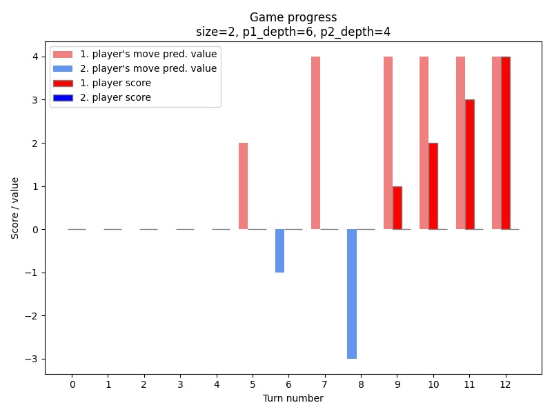 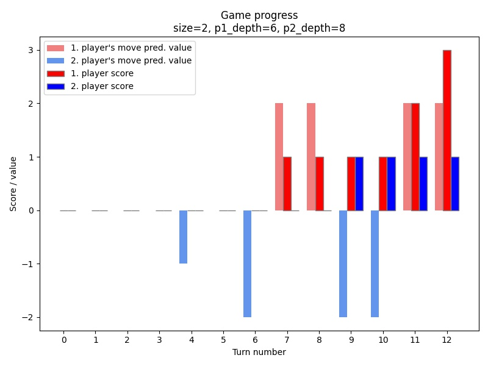 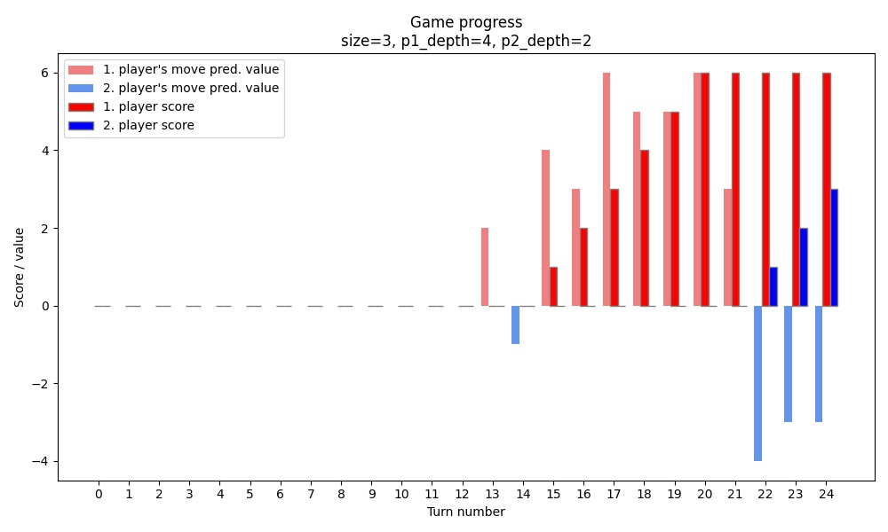 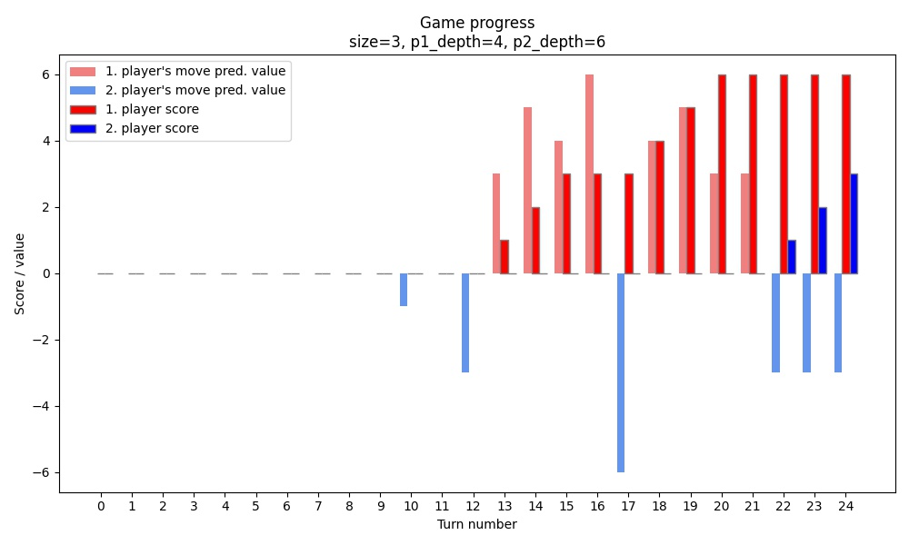 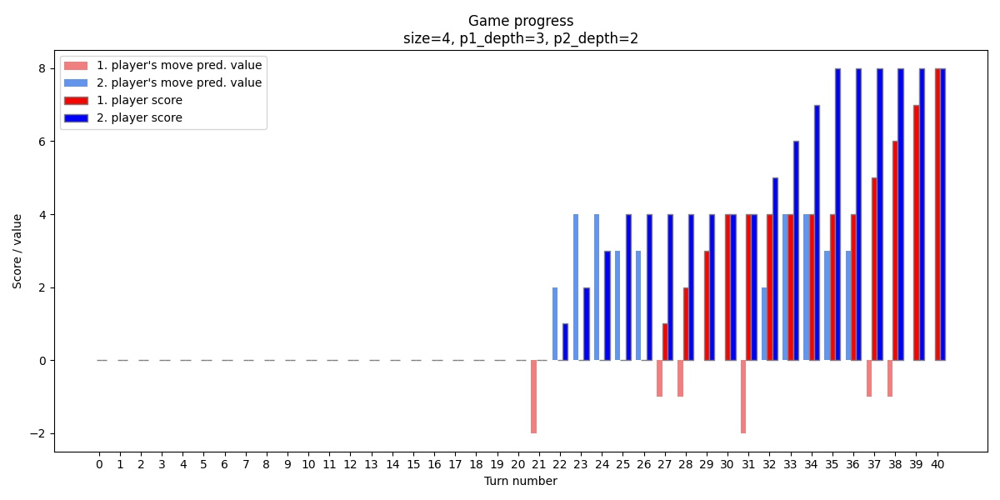 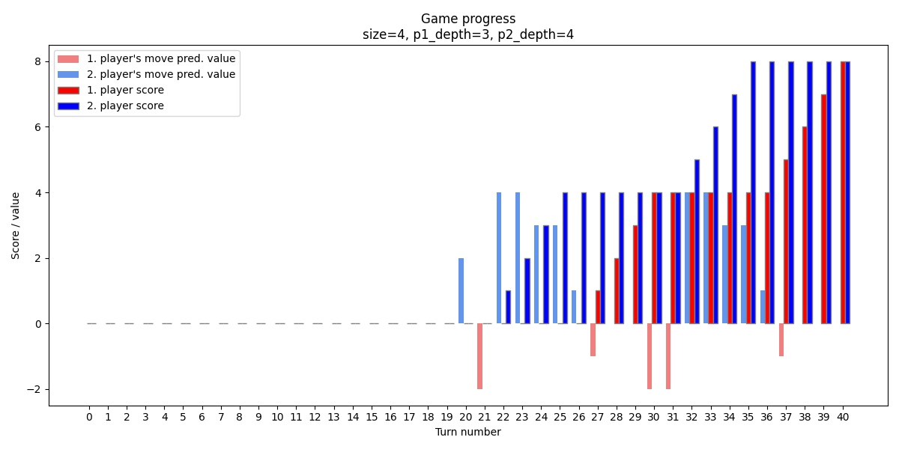 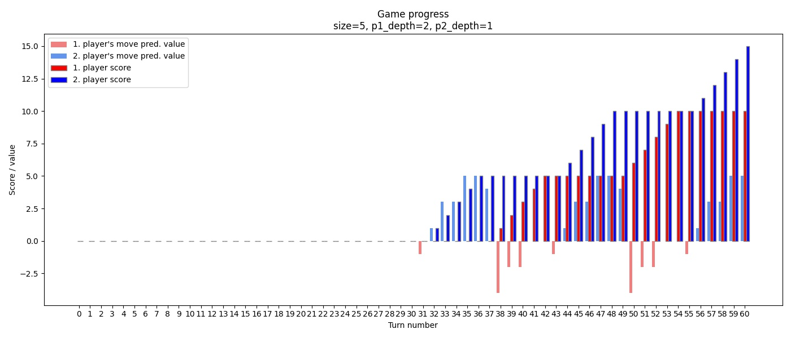 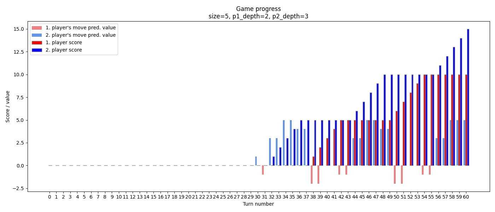
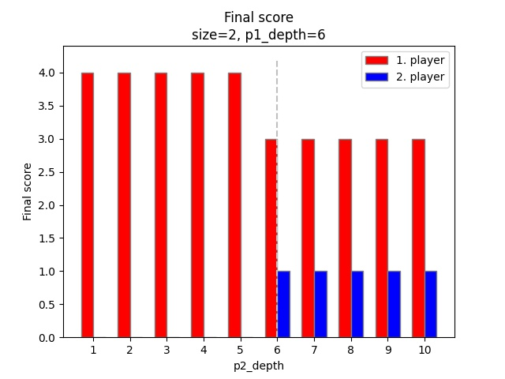 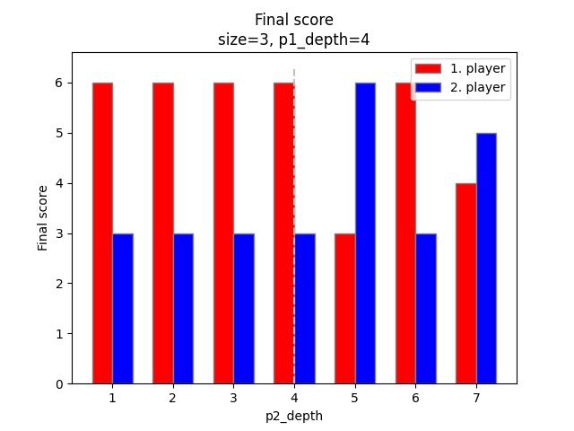 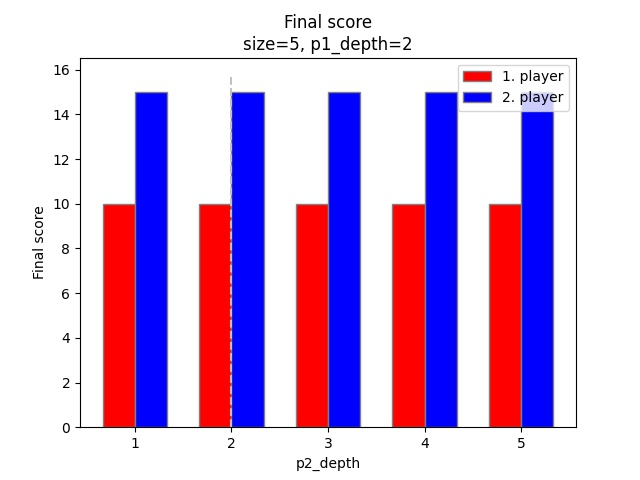
Z wykresów przebiegu rozgrywki można wywnioskować, że:
Z wykresów porównujących można wywnioskować, że:
size=2:
size=3:
size=4:
p2_depth niż 5, bo zbyt długo wykonywałby się benchmark (dla p2_depth=5 już wykonywał się ponad 1 minutę, a cały benchmark 37 minut). Natomiast mogłem zmniejszyć p1_depth. Jak widać na poniższym wykresie dalej utrzymuje się ten sam wynik meczu: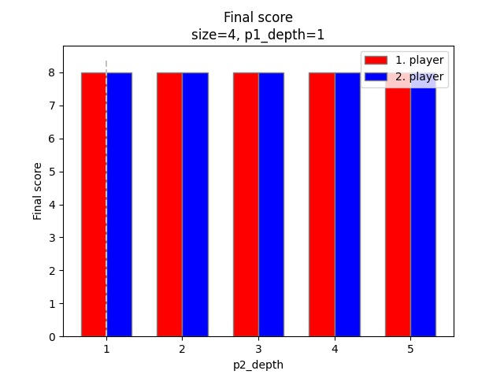
size=5
size=4 - nie widać wpływu p2_depth na wynik rozgrywki, nawet dla mniejszego p1_depth: